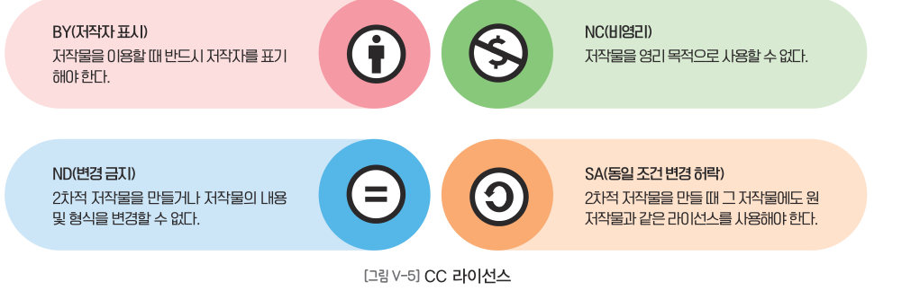
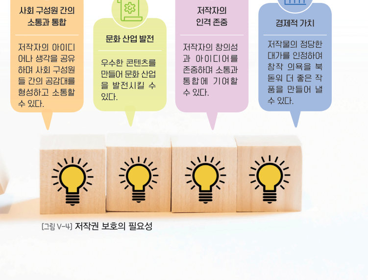
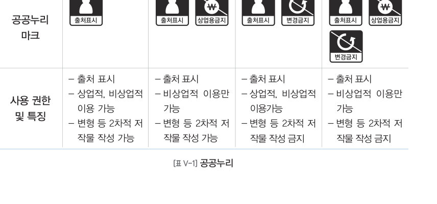
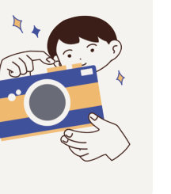
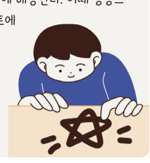
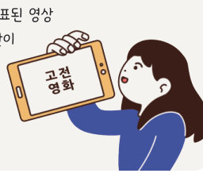
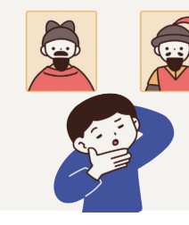
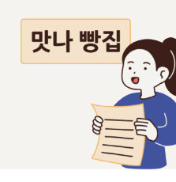

커버 댄스 영상, 30초짜리 배경 음악, 인공지능으로 그린 그림 — 모두 마음대로 써도 될까? 저작권의 의미를 알고, CC 라이선스 조건을 직접 조합해 보며, 교과서 엔트리 ○× 퀴즈 프로그램을 풀고 나만의 문제를 추가해 보자.
저작권이란 저작물을 만든 사람의 노력과 가치를 인정하고 권리를 보호하기 위해 저작자가 자신의 저작물에 관하여 가지는 권리이다. 저작물이란 개인의 생각과 감정을 일정한 형식에 담아 직접 표현하거나 창작한 모든 것을 말한다. 저작물의 종류에는 어문(소설·시·각본), 음악, 연극, 미술(회화·서예·조각), 건축(건축물·설계도), 사진, 영상, 도형(지도·도표), 컴퓨터 프로그램이 있으며, 이 밖에도 저작물의 요건을 갖추면 저작물로 인정된다.
저작권자의 권리를 보장하고, 문화 및 관련 산업의 발전을 위해 저작권 보호는 매우 중요하다. 저작권자의 허락 없이 저작물을 이용하는 것은 저작권자의 비용과 노력을 침해하는 행위로 법률에 따라 처벌받을 수 있다. 예를 들어, 인터넷에서 저작권이 있는 저작물을 불법으로 내려받아 허락 없이 사용하면 저작권 침해로 이어질 수 있다.
| 친구가 직접 쓴 시 | |
| 내가 엔트리로 만든 게임 프로그램 | |
| 건축가가 그린 건물 설계도 | |
| 우리 동네 지도 | |
| 헌법, 법률, 조례, 규칙 | |
| 법원의 판결, 명령 | |
| ‘오늘 서울의 최고 기온은 25 ℃였다.’ 같은 단순한 사실 전달에 불과한 시사 보도 |

| 저작자의 아이디어나 생각을 공유하며 사회 구성원들 간의 공감대를 형성하고 소통할 수 있다. | |
| 우수한 콘텐츠를 만들어 문화 산업을 발전시킬 수 있다. | |
| 저작자의 창의성과 아이디어를 존중하며 소통과 통합에 기여할 수 있다. | |
| 저작물의 정당한 대가를 인정하여 창작 의욕을 북돋워 더 좋은 작품을 만들어 낼 수 있다. |
최근 인공지능을 이용하여 그린 만화의 저작권이 등록되었다. 원칙적으로 저작권의 인정은 사람이 직접 창작한 것이어야 하기 때문에 인공지능이 생성한 그림은 제외하고 사람이 구상한 이야기와 그림의 구성만 저작권으로 등록되었다.
| 유행하는 커버 송, 커버 댄스는 상업적 목적이 아니라면 자유롭게 게시할 수 있다. | |
| 30초 미만의 짧은 음원 사용도 저작권 침해에 해당한다. | |
| 영상 제작에 애국가를 이용하려면 저작권자의 허락을 받아야 한다. | |
| 누구나 알고 있는 캐릭터는 제약 없이 쓸 수 있다. |
저작물은 저작권자에게 허락을 받고 사용해야 하지만, CC 라이선스(CCL: Creative Commons License)가 있는 저작물은 조건에 따라 이용할 수 있다. CC 라이선스는 원칙적으로 모든 사람에게 저작물을 자유롭게 이용하도록 허용하지만, 저작권자의 권리를 보호하기 위해 저작권자의 의사에 따라 몇 가지 부가적인 이용 방법과 조건을 제시하고 있다.
| CC BY-NC-ND 사진을 저작자를 밝히고 학교 발표 자료에 그대로 넣는다. | |
| CC BY-NC-ND 사진에 글자를 넣어 새 포스터로 바꾼다. | |
| CC BY-NC 그림을 넣은 티셔츠를 만들어 판매한다. | |
| CC BY 음악을 저작자를 표시하고 내 영상의 배경 음악으로 쓴다. | |
| CC BY-SA 그림을 고쳐 만든 새 그림을 CC BY-SA로 공유한다. | |
| CC BY-SA 그림을 고쳐 만든 새 그림을 저작권 표시 없이 ‘모든 권리 보유’로 공개한다. |
우리나라는 CC 라이선스와 같이 공공 저작물에 특화된 자유 이용 허락표시 제도인 공공누리가 있다. 이는 국가나 지방자치단체에서 업무상 작성하여 공표한 저작물과 계약에 따라 저작재산권의 전부를 보유한 저작물을 국민 누구나 별도의 이용허락 없이 자유롭게 이용할 수 있다. 공공누리는 ‘출처 표시’, ‘변경 금지’, ‘상업적 이용 금지’를 바탕으로 총 네 가지의 이용 허락 유형으로 구분할 수 있고 저작물의 출처 표시는 모든 유형에서 필수 사항이다.

| 출처 표시 · 상업적, 비상업적 이용 가능 · 변형 등 2차적 저작물 작성 가능 | |
| 출처 표시 · 비상업적 이용만 가능 · 변형 등 2차적 저작물 작성 가능 | |
| 출처 표시 · 상업적, 비상업적 이용 가능 · 변형 등 2차적 저작물 작성 금지 | |
| 출처 표시 · 비상업적 이용만 가능 · 변형 등 2차적 저작물 작성 금지 |





‘콜로라도 주립 박람회 미술전’의 디지털 아트 부문에서 게임 기획자인 제이슨 M. 앨런이 인공지능으로 생성한 작품 ‘스페이스 오페라 극장’이 대회에서 1위를 차지하였다. ‘스페이스 오페라 극장’은 글을 입력하면 그에 따른 이미지로 변환시켜 주는 인공지능 생성 프로그램으로 만든 작품으로 많은 사람들이 이 사실을 알게 되면서 논란이 커졌다. 반대하는 사람들은 인공지능이 만든 작품을 예술로 볼 수 없고, 예술가가 단 한 번의 붓질도 하지 않은 작품이 우승을 차지하는 것은 정당하지 않다고 주장하였다. 앨런은 자신은 대회에 작품을 제출할 때 인공지능 생성 프로그램을 사용했다고 명시한 만큼 출처를 밝혔으며, 대회에 제출한 작품 세 점을 얻으려고 80시간이 넘게 걸렸고 그 어떤 규칙도 어기지 않았다고 항변하였다. 미술전 디지털 아트 부문은 규정에서 디지털 기술을 활용하거나 색깔을 조정하는 등 디지털 방식으로 이미지를 편집하는 행위를 인정하기 때문이다.
| 평가 기준 | 스스로 평가 |
|---|---|
| 저작권의 의미와 저작권 보호의 필요성을 설명할 수 있는가? | |
| 디지털 저작물의 올바른 이용 방법을 실천할 수 있는가? | |
| 디지털 사회에서 발생하는 문제에 대해 친구의 의견을 존중하며 토론하였는가? |